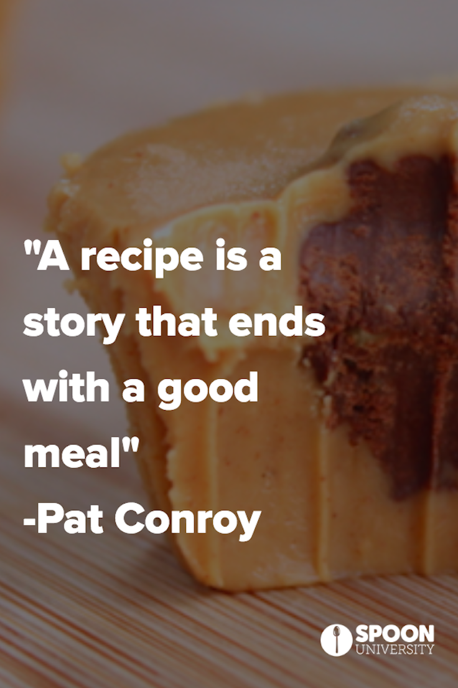
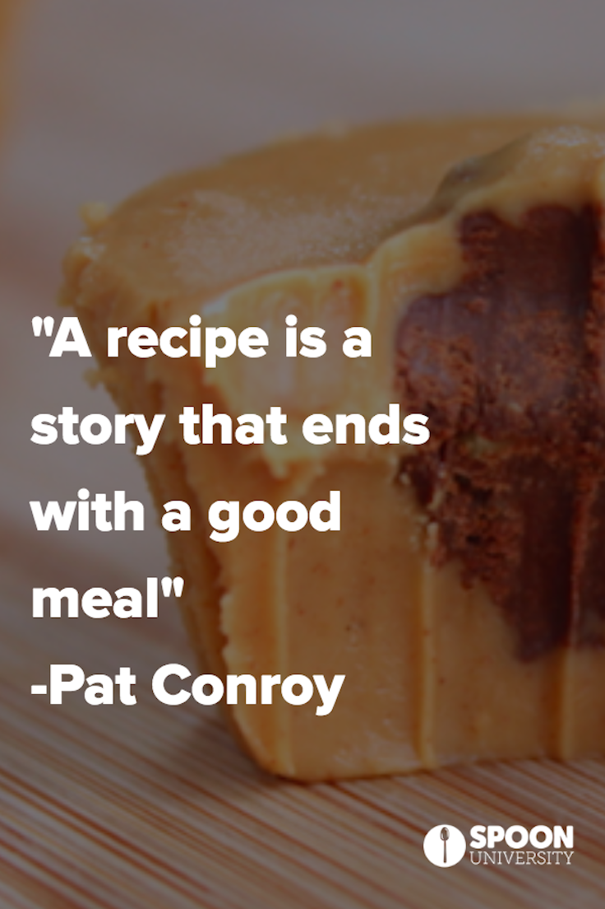

What are Easy Stomach Snacks
Easy on stomach Snacks are snacks that are easy to digest by stomach Such food are listed below
.jpg)
HEALTHY FOR HEALTH


What are Easy Stomach Snacks
Easy on stomach Snacks are snacks that are easy to digest by stomach Such food are listed below
RECIPE In a large bowl, dissolve yeast and sugar in warm water. Stir in lard, salt and two cups of the flour. Stir in the remaining flour, 1/2 cup at a time, beating well after each addition. When the dough has pulled together, turn it out onto a lightly floured surface and knead until smooth and elastic, about 8 minutes. Lightly oil a large bowl, place the dough in the bowl and turn to coat with oil. Cover with a damp cloth and let rise in a warm place until doubled in volume, about 1 hour. Deflate the dough and turn it out onto a lightly floured surface. Divide the dough into two equal pieces and form into loaves. Place the loaves into two lightly greased 9x5 inch loaf pans. Cover the loaves with a damp cloth and let rise until doubled in volume, about 40 minutes. Preheat oven to 425 degrees F (220 degrees C).Place bread in the preheated oven and lower temperature to 375 degrees F (190 degrees C). Bake until the top is golden brown and the bottom of the loaf sounds hollow when tapped, about 30 minutes.

RECIPE Melt butter in a medium saucepan over medium heat. Add rice and stir to coat. Cook until rice grainsbegin to turn opaque, 1 to 2 minutes; do not brown. Add water and salt.Bring to a boil; reduce heat to low. Cover and let simmer for 15 minutes. Do not lift the lid.Remove from heat and let stand, covered,for 5 minutes. Fluff with a fork before serving.

RECIPE Bananas are good for soothing your stomach with so you should eat a banana. Bananas help counteract the acidthat is usually associated with an upset stomach and helps with diarrhea problems as well.Peel the outer covering off from banana and then cut it into slices and put it in a bowl.
RECIPE Let the eggs stand in the hot water for 4 to 12 minutes, depending on how firm or set you want the yolks to be.Why the time range? The longer the eggs sit in hot water the more cooked the yolk will be: figure less time forsoft boiled eggs and longer time for hard boiled eggs.

RECIPE Baked sweet potatoes are about as easy as it gets! Simply grab a fork and a baking dish—not forgetting a little aluminum foil—and they’re ready to go in the oven! You can season with your favorite herbs or spicesand add plenty of butter when they’re still hot. Use a fork to pierce the sweet potato skin 5-6 times Place potatoes on a baking sheet or in a baking dish—either one, line with foil first. Bake at 400° F for about 45 minutes or until tender.

 
